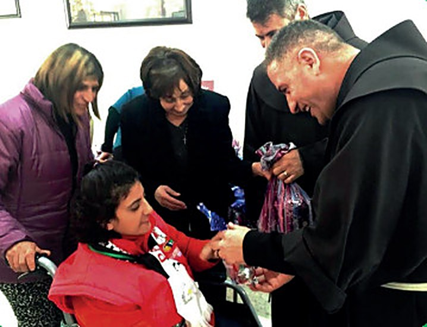
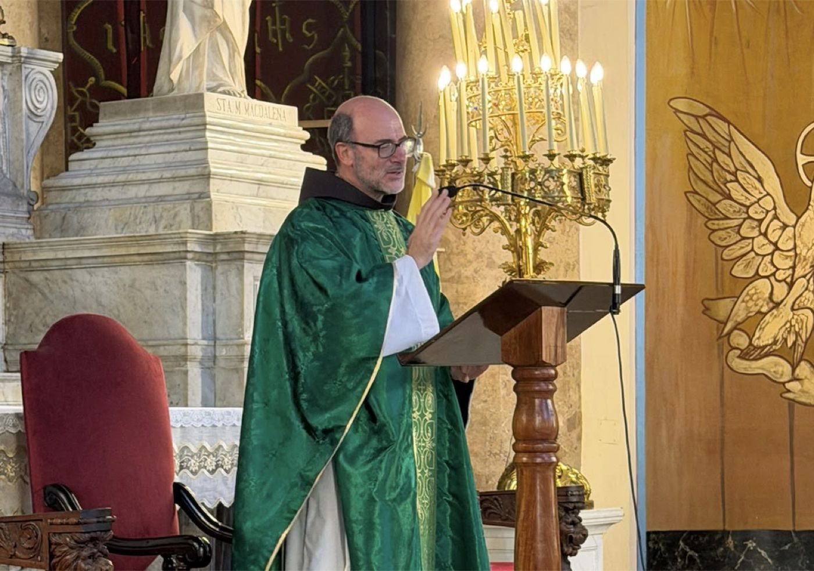
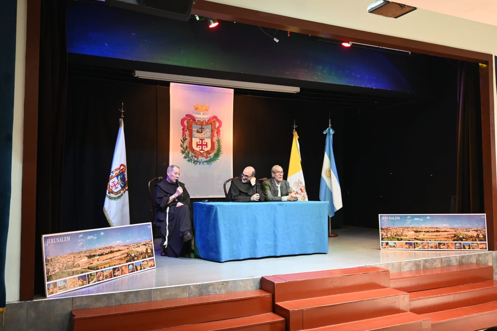
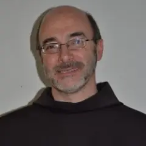
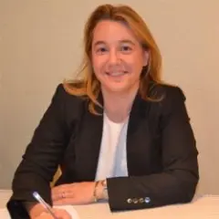

«La cena las pones tú 2026»
Como años anteriores nos hemos propuesto alcanzar las 1.000 aportaciones antes del 31 de diciembre
Leer noticia
Última hora

Como años anteriores nos hemos propuesto alcanzar las 1.000 aportaciones antes del 31 de diciembre
Leer noticia
Colocaron la piedra fundamental de la capilla del Buen Pastor en memoria del papa Francisco
Leer noticia



Revista Tierra Santa
La Revista Tierra Santa pertenece a los franciscanos de la Orden de los Hermanos Menores, concretamente a la Custodia de Tierra Santa en España (Centro de Tierra Santa). El fin principal es ayudar a Tierra Santa. Otros fines son dar a conocer la Tierra de Jesús mediante la revista, la edición de obras que divulguen todos los aspectos de aquella Tierra y la formación bíblica, teológica, histórica y arqueológica mediante cursos, conferencias y jornadas que permitan a los asistentes profundizar en el conocimiento de todos los aspectos relacionados con la figura de Nuestro Señor y de la Tierra en la que se encarnó y vivió hasta su Resurrección.
La revista Tierra Santa, que se edita cada dos meses, es el medio que permite dar a conocer en lengua castellana el espíritu franciscano de Tierra Santa, proporcionando información de actualidad, histórica, arqueológica y bíblica de los Santos Lugares.


Responsable de la Revista
Franciscano sacerdote de la diócesis de Madrid. Realizó sus estudios de Teología en la Facultad de Teología del Norte de España (Burgos), Licenciatura en Teología dogmática en la Universidad Pontificia de Salamanca, Doctorado en Teología Dogmática por la Universidad Eclesiástica de San Dámaso (Madrid) y Licenciatura en Teología Fundamental por el Instituto Teológico de Murcia (Pontifica Universidad Antonianum), además de otros estudios en Jerusalén (exégesis y arqueología) y Madrid (vida consagrada).
Actualmente es Profesor en la Universidad Eclesiástica San Dámaso y en el Instituto Teológico de Murcia, además de Presidente de los Comisarios de Tierra Santa en España y Portugal, y Representante legal del Custodio de Tierra Santa en España.

Directora
Licenciada en Periodismo, diplomada en Altos Estudios Internacionales con amplios conocimientos de Community Manager y Social Media. Con más de 15 años de experiencia en diferentes puestos de comunicación, tanto en multinacionales como Repsol; institucionales, como el Ministerio de Defensa; privadas como el Instituto de Seguridad Global o fundaciones como CODESPA.
Asimismo, ha trabajado como profesora de Comunicación en la Universidad Complutense de Madrid y ha colaborado escribiendo artículos en diversas revistas especializadas.

Consejo de redacción
Doctora en Teología en la Universidad Eclesiástica San Dámaso (Madrid), en la que es profesora Adjunta a Cátedra, y profesora Asociada de la Facultad de Literatura Cristiana y Clásica-San Justino (UESD). Líneas de Investigación: Arqueología Bíblica, Iconografía comparada, estudios bíblicos, judaísmo y sus lenguas. Profesora de Arameo y hebreo. Es también profesora invitada de la Universidad Francisco de Vitoria, con la asignatura Historia de las Civilizaciones.
Tiene una larga experiencia en Arqueología: desde 1996, es arqueóloga en Tel Hazor (Galilea,Israel) y desde 2012 en la Ciudad de David, Jerusalem. Colaboradora de National Geographic España, y otras revistas científicas.

Secretaria
María José Villegas Villena, nació en Madrid, está casada y es madre de 6 hijos. Se licenció en Psicología, especialidad en Piscologia evolultiva por la Universidad Complutense de Madrid. Miembro del Camino Neocatecumenal del que ha recibido su amor a la Igleisa y a Tierra Santa como fuente de la Fe de donde brotan las raíces del cristianismo. Ha peregrinado en múltiples ocasiones a Israel desde 1999 descubriendo que es el lugar que Dios eligió para hacerse carne para salvar a los hombres.
Hemeroteca · Desde 1921
819 revistas · 1921 – 2025
Todas las revistas desde 1921, gratis y completas
Escoge por dónde empezar.
Desliza para explorar
o usa las flechas ← →
Suscripciones
Suscripción como donante Amigo 50 € / año.
Con esta suscripción entra directamente en el sorteo anual de viajes a Tierra Santa.
SuscribirmeSuscripción como donante Benefactor 80 € / año.
Con esta suscripción entra directamente en el sorteo anual de viajes a Tierra Santa.
SuscribirmeSuscripción Ordinaria 30 € / año. También en PDF: 20 € / año.
Puede participar en el sorteo anual de viajes a Tierra Santa (+12,00 €).
SuscribirmeSuscripción como donante Protector 150 € / año.
Con esta suscripción entra directamente en el sorteo anual de viajes a Tierra Santa.
Suscribirme